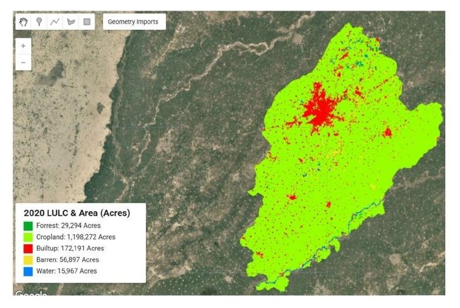
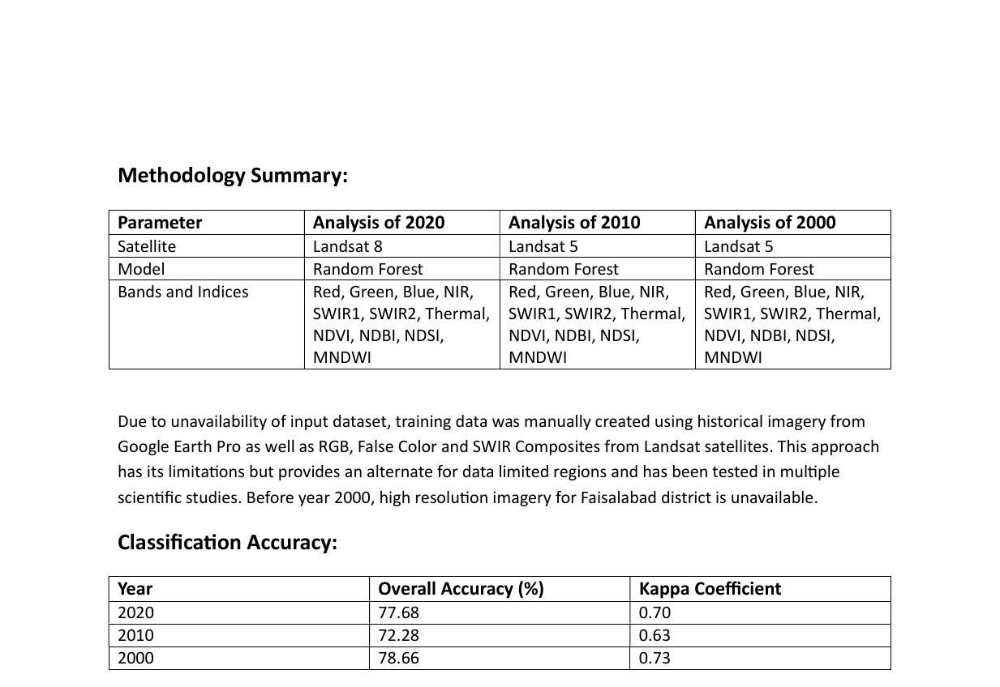
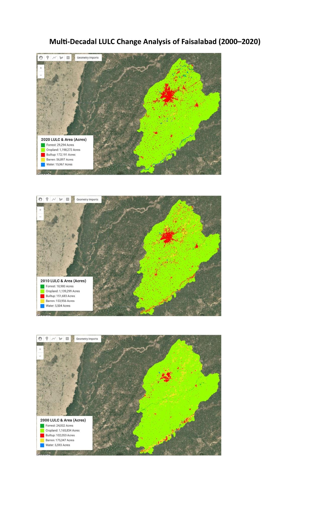

Multi-Decadal LULC Classification of Faisalabad
Random Forest classification of Landsat imagery from 2000, 2010 and 2020 to explore two decades of land-cover patterns and change.
← Back to ProjectsProject Overview
This independent analysis used Landsat imagery and Random Forest classification in Google Earth Engine to examine land-cover patterns across Faisalabad for 2000, 2010 and 2020. Five classes were mapped: forest / evergreen, cropland, built-up, bare / barren land and water.
Landsat 5 was used for 2000 and 2010, while Landsat 8 was used for 2020. Predictor variables included visible, NIR, SWIR and thermal bands together with NDVI, NDBI, NDSI and MNDWI.

Classification Outputs

Accuracy Assessment
| Year | Overall accuracy | Kappa |
|---|---|---|
| 2000 | 78.66% | 0.73 |
| 2010 | 72.28% | 0.63 |
| 2020 | 77.68% | 0.70 |
Scope & Limitations
High-resolution historical reference imagery was limited, particularly for the earlier periods. Training and reference interpretation therefore used available Google Earth imagery together with Landsat RGB, false-colour and SWIR composites.
The confusion matrices also show substantial confusion between built-up and bare / barren surfaces, so the mapped class-area changes are best interpreted as exploratory rather than precise measurements of land transition.